Reporting ID: analysis_reporting_all_NA_20260429T032103Z
Generated at UTC: 2026-04-29T03:21:03.257749+00:00
This report provides advisor-facing visual summaries of the consolidated LocalAI worker-mode pilot campaigns. It is generated after technical diagnosis and before completion-gate evaluation, so that the benchmark cycle is not considered closed until its results are readable and inspectable.
The report combines measurement CSV data for quantitative charts with technical diagnosis outputs for interpretation, unsupported-scenario evidence and family-level judgments.
| Dimension | Baseline value |
|---|---|
| Baseline ID | B0 |
| Model | llama-3.2-1b-instruct:q4_k_m |
| Worker count | 2 |
| Placement | colocated_sc_app_02 |
| Workload | users=2, spawnRate=1, runTime=2m |
| Prompt | Reply with only READY. |
| Request timeout | 120 s |
| Layer | Primary use | Source |
|---|---|---|
| Measurement CSV | Quantitative charts and scenario summary metrics | results/pilot/consolidated/**/_stats.csv |
| Technical diagnosis | Interpretation, family judgments, findings, unsupported-scenario context | results/diagnosis/analysis_diagnosis_all_NA_20260429T032056Z_diagnosis.json |
| Scenario configuration | Fixed/varied dimensions and scenario labels | config/scenarios/** |
| Cluster-side artifacts | CPU/memory snapshots and placement evidence | *_cluster_post_* files |
The global report below provides the advisor-facing overview. Each sweep also has a dedicated report for focused inspection of one varied dimension.
| Sweep | Dedicated HTML report | Execution status | Coverage | Varied dimension |
|---|---|---|---|---|
| Worker-count sweep | worker-count | partially_measured | measured=2, unsupported=2, missing=0 | number of LocalAI RPC workers |
| Workload sweep | workload | fully_measured | measured=3, unsupported=0, missing=0 | synthetic client-side workload pattern |
| Model sweep | models | fully_measured | measured=4, unsupported=0, missing=0 | model served by the LocalAI worker-mode cluster |
| Placement sweep | placement | fully_measured | measured=2, unsupported=0, missing=0 | Kubernetes placement strategy for LocalAI server and workers |
| Family | Scenarios | Observed | Measured | Unsupported | Samples |
|---|---|---|---|---|---|
| worker-count | 4 | 4 | 2 | 2 | 6 |
| workload | 3 | 3 | 3 | 0 | 9 |
| models | 4 | 4 | 4 | 0 | 12 |
| placement | 2 | 2 | 2 | 0 | 6 |
Execution status: partially_measured
Execution note: At least one configured scenario has measured benchmark samples, while other scenarios are missing or unsupported.
Varied dimension: number of LocalAI RPC workers
Fixed dimensions: baseline model, baseline workload, baseline placement, baseline protocol.
Reference scenario within the sweep: W2
| Scenario count | Measured | Unsupported | Missing |
|---|---|---|---|
| 4 | 2 | 2 | 0 |
| Fixed dimension | Value inherited from baseline |
|---|---|
| Model | llama-3.2-1b-instruct:q4_k_m |
| Placement | colocated_sc_app_02 |
| Workload | users=2, spawnRate=1, runTime=2m |
| Prompt | Reply with only READY. |
| Temperature | 0.1 |
| Request timeout | 120 s |
| Scenario | Status | Varied value (number of LocalAI RPC workers) | Model | Workers | Placement | Workload | Timeout (s) |
|---|---|---|---|---|---|---|---|
W1 | measured | 1 | llama-3.2-1b-instruct:q4_k_m | 1 | colocated_sc_app_02 | users=2, spawnRate=1, runTime=2m | 120 |
W2 | measured | 2 | llama-3.2-1b-instruct:q4_k_m | 2 | colocated_sc_app_02 | users=2, spawnRate=1, runTime=2m | 120 |
W3 | unsupported_under_current_constraints | 3 | llama-3.2-1b-instruct:q4_k_m | 3 | colocated_sc_app_02 | users=2, spawnRate=1, runTime=2m | 120 |
W4 | unsupported_under_current_constraints | 4 | llama-3.2-1b-instruct:q4_k_m | 4 | colocated_sc_app_02 | users=2, spawnRate=1, runTime=2m | 120 |
This compact table reports the core indicators used to read the sweep at a glance. Detailed percentiles, deltas and resource snapshots are reported in the following extended table.
| Scenario | Description | Status | Sample count | Mean response time (ms) | P95 response time (ms) | Throughput (requests/s) | Unsupported evidence |
|---|---|---|---|---|---|---|---|
W1 | W1 (1 worker) | measured | 3 | 1507.36 | 1600.00 | 0.5709 | |
W2 | W2 (2 worker) | measured | 3 | 1504.10 | 1600.00 | 0.5715 | |
W3 | W3 (3 worker) | unsupported_under_current_constraints | 0 | n/a | n/a | n/a | failed_scheduling, insufficient_cpu, insufficient_memory, no_preemption_victims_found, node_affinity_selector_mismatch, pending_pod, preemption_not_helpful |
W4 | W4 (4 worker) | unsupported_under_current_constraints | 0 | n/a | n/a | n/a | failed_scheduling, insufficient_cpu, insufficient_memory, no_preemption_victims_found, node_affinity_selector_mismatch, pending_pod, preemption_not_helpful |
This secondary table keeps the additional metrics aligned with the technical diagnosis while avoiding an excessively wide primary summary table.
| Scenario | P50 response time (ms) | P99 response time (ms) | Mean response time delta (%) | P95 response time delta (%) | Throughput delta (%) | Max node CPU snapshot (%) | Max node memory snapshot (%) |
|---|---|---|---|---|---|---|---|
W1 | 1500.00 | 1700.00 | 0.22 | 0.00 | -0.10 | 33.67 | 37.33 |
W2 | 1500.00 | 1700.00 | 0.00 | 0.00 | 0.00 | 34.67 | 37.33 |
W3 | n/a | n/a | n/a | n/a | n/a | n/a | n/a |
W4 | n/a | n/a | n/a | n/a | n/a | n/a | n/a |
weak_signal, confidence: low).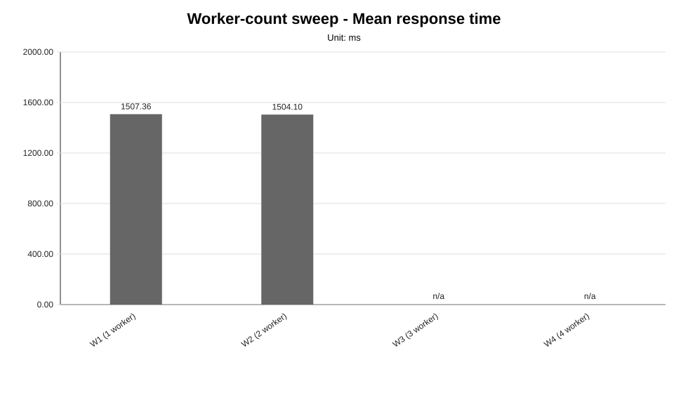
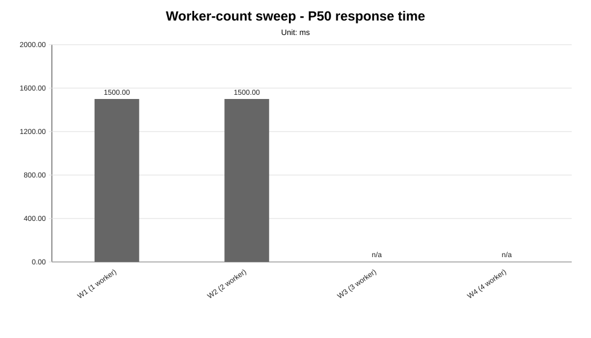
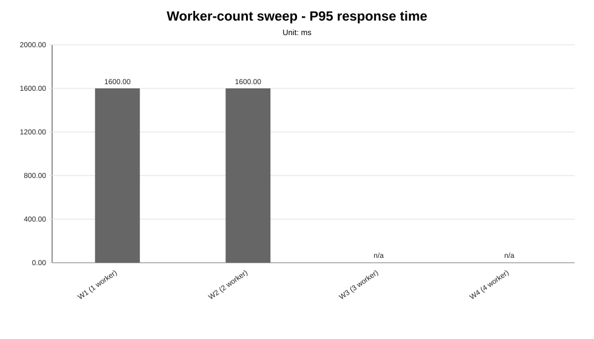
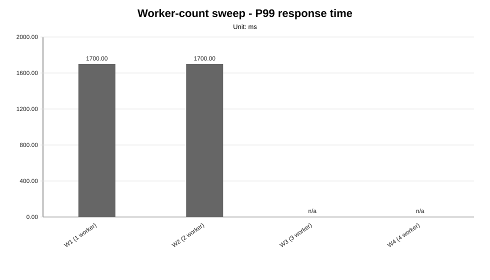
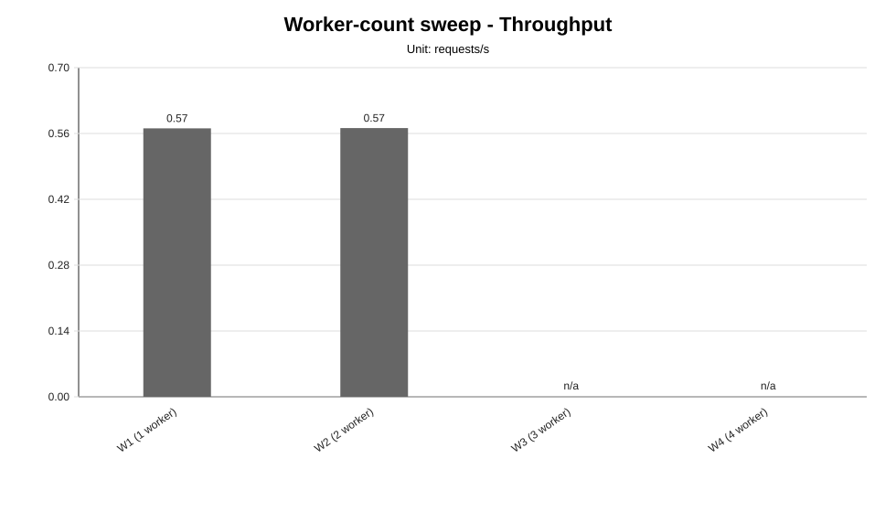
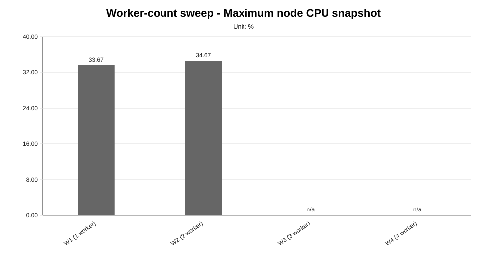
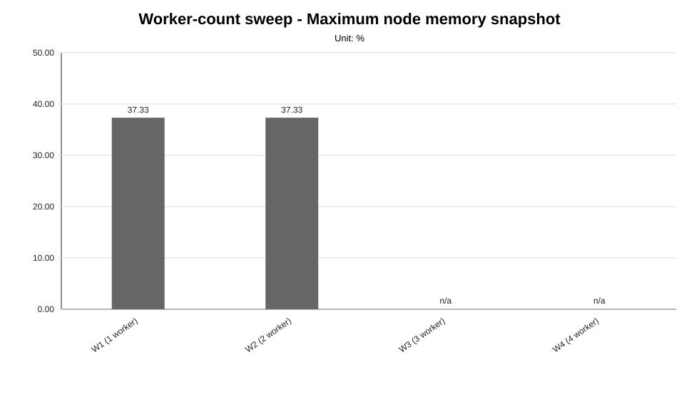
not_executed sweep means that neither measurement CSV files nor unsupported-scenario evidence were found for any configured scenario in that family.Execution status: fully_measured
Execution note: All configured scenarios in this sweep have measured benchmark samples.
Varied dimension: synthetic client-side workload pattern
Fixed dimensions: baseline model, baseline worker count, baseline placement, baseline protocol.
Reference scenario within the sweep: WL2
| Scenario count | Measured | Unsupported | Missing |
|---|---|---|---|
| 3 | 3 | 0 | 0 |
| Fixed dimension | Value inherited from baseline |
|---|---|
| Model | llama-3.2-1b-instruct:q4_k_m |
| Worker count | 2 |
| Placement | colocated_sc_app_02 |
| Prompt | Reply with only READY. |
| Temperature | 0.1 |
| Request timeout | 120 s |
| Scenario | Status | Varied value (synthetic client-side workload pattern) | Model | Workers | Placement | Workload | Timeout (s) |
|---|---|---|---|---|---|---|---|
WL1 | measured | users=1, spawnRate=1, runTime=2m | llama-3.2-1b-instruct:q4_k_m | 2 | colocated_sc_app_02 | users=1, spawnRate=1, runTime=2m | 120 |
WL2 | measured | users=2, spawnRate=1, runTime=2m | llama-3.2-1b-instruct:q4_k_m | 2 | colocated_sc_app_02 | users=2, spawnRate=1, runTime=2m | 120 |
WL3 | measured | users=4, spawnRate=2, runTime=2m | llama-3.2-1b-instruct:q4_k_m | 2 | colocated_sc_app_02 | users=4, spawnRate=2, runTime=2m | 120 |
This compact table reports the core indicators used to read the sweep at a glance. Detailed percentiles, deltas and resource snapshots are reported in the following extended table.
| Scenario | Description | Status | Sample count | Mean response time (ms) | P95 response time (ms) | Throughput (requests/s) | Unsupported evidence |
|---|---|---|---|---|---|---|---|
WL1 | WL1 (1 users, spawn 1) | measured | 3 | 1457.79 | 1500.00 | 0.2918 | |
WL2 | WL2 (2 users, spawn 1) | measured | 3 | 1493.44 | 1600.00 | 0.5732 | |
WL3 | WL3 (4 users, spawn 2) | measured | 3 | 3269.69 | 3300.00 | 0.7559 |
This secondary table keeps the additional metrics aligned with the technical diagnosis while avoiding an excessively wide primary summary table.
| Scenario | P50 response time (ms) | P99 response time (ms) | Mean response time delta (%) | P95 response time delta (%) | Throughput delta (%) | Max node CPU snapshot (%) | Max node memory snapshot (%) |
|---|---|---|---|---|---|---|---|
WL1 | 1466.67 | 1533.33 | -2.39 | -6.25 | -49.09 | 17.33 | 37.33 |
WL2 | 1500.00 | 1700.00 | 0.00 | 0.00 | 0.00 | 34.67 | 37.33 |
WL3 | 3300.00 | 3633.33 | 118.94 | 106.25 | 31.87 | 50.00 | 37.00 |
strong_signal, confidence: medium).medium).


not_executed sweep means that neither measurement CSV files nor unsupported-scenario evidence were found for any configured scenario in that family.Execution status: fully_measured
Execution note: All configured scenarios in this sweep have measured benchmark samples.
Varied dimension: model served by the LocalAI worker-mode cluster
Fixed dimensions: baseline worker count, baseline workload, baseline placement, baseline protocol.
Reference scenario within the sweep: M1
| Scenario count | Measured | Unsupported | Missing |
|---|---|---|---|
| 4 | 4 | 0 | 0 |
| Fixed dimension | Value inherited from baseline |
|---|---|
| Worker count | 2 |
| Placement | colocated_sc_app_02 |
| Workload | users=2, spawnRate=1, runTime=2m |
| Prompt | Reply with only READY. |
| Temperature | 0.1 |
| Request timeout | 120 s |
| Scenario | Status | Varied value (model served by the LocalAI worker-mode cluster) | Model | Workers | Placement | Workload | Timeout (s) |
|---|---|---|---|---|---|---|---|
M1 | measured | llama-3.2-1b-instruct:q4_k_m | llama-3.2-1b-instruct:q4_k_m | 2 | colocated_sc_app_02 | users=2, spawnRate=1, runTime=2m | 120 |
M2 | measured | llama-3.2-1b-instruct:q8_0 | llama-3.2-1b-instruct:q8_0 | 2 | colocated_sc_app_02 | users=2, spawnRate=1, runTime=2m | 120 |
M3 | measured | llama-3.2-3b-instruct:q4_k_m | llama-3.2-3b-instruct:q4_k_m | 2 | colocated_sc_app_02 | users=2, spawnRate=1, runTime=2m | 120 |
M4 | measured | llama-3.2-3b-instruct:q8_0 | llama-3.2-3b-instruct:q8_0 | 2 | colocated_sc_app_02 | users=2, spawnRate=1, runTime=2m | 120 |
This compact table reports the core indicators used to read the sweep at a glance. Detailed percentiles, deltas and resource snapshots are reported in the following extended table.
| Scenario | Description | Status | Sample count | Mean response time (ms) | P95 response time (ms) | Throughput (requests/s) | Unsupported evidence |
|---|---|---|---|---|---|---|---|
M1 | M1 (llama-3.2-1b-instruct:q4_k_m) | measured | 3 | 1497.13 | 1600.00 | 0.5725 | |
M2 | M2 (llama-3.2-1b-instruct:q8_0) | measured | 3 | 1381.22 | 1400.00 | 0.5927 | |
M3 | M3 (llama-3.2-3b-instruct:q4_k_m) | measured | 3 | 5168.81 | 5100.00 | 0.2782 | |
M4 | M4 (llama-3.2-3b-instruct:q8_0) | measured | 3 | 4345.21 | 4400.00 | 0.3146 |
This secondary table keeps the additional metrics aligned with the technical diagnosis while avoiding an excessively wide primary summary table.
| Scenario | P50 response time (ms) | P99 response time (ms) | Mean response time delta (%) | P95 response time delta (%) | Throughput delta (%) | Max node CPU snapshot (%) | Max node memory snapshot (%) |
|---|---|---|---|---|---|---|---|
M1 | 1500.00 | 1700.00 | 0.00 | 0.00 | 0.00 | 34.00 | 37.67 |
M2 | 1400.00 | 1500.00 | -7.74 | -12.50 | 3.53 | 32.67 | 35.00 |
M3 | 5000.00 | 9300.00 | 245.25 | 218.75 | -51.41 | 52.00 | 43.00 |
M4 | 4300.00 | 6400.00 | 190.24 | 175.00 | -45.05 | 52.00 | 52.00 |
strong_signal, confidence: high).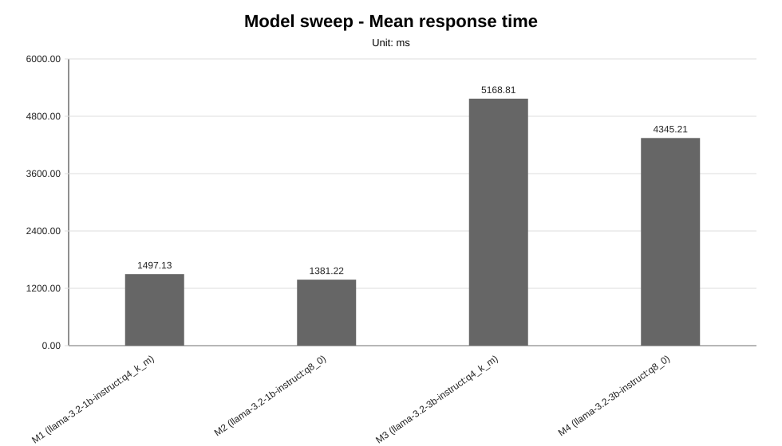
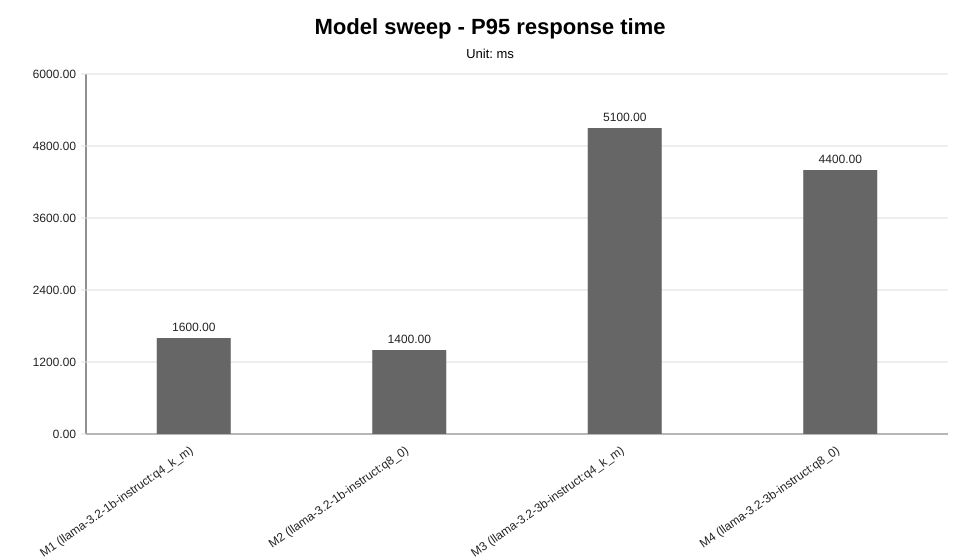
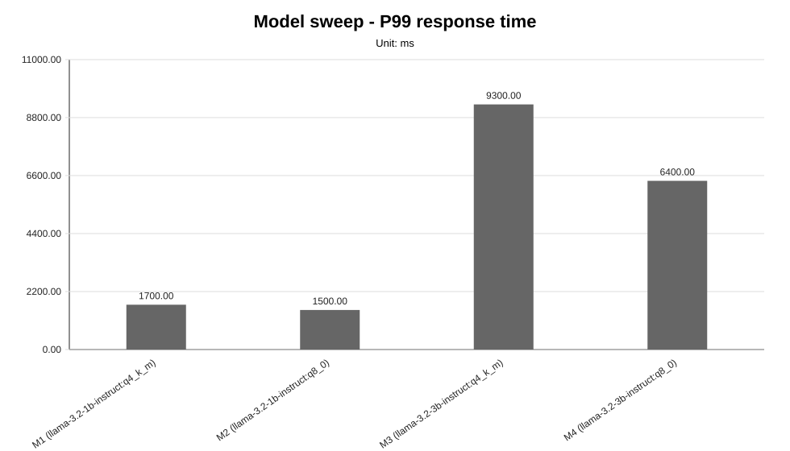
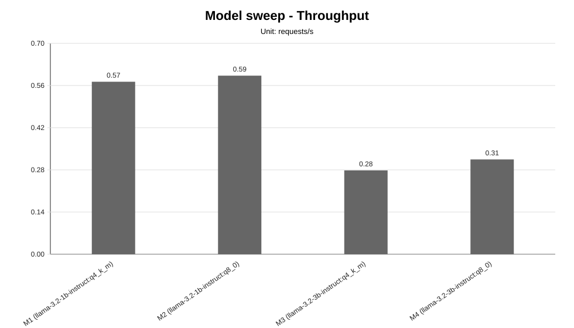
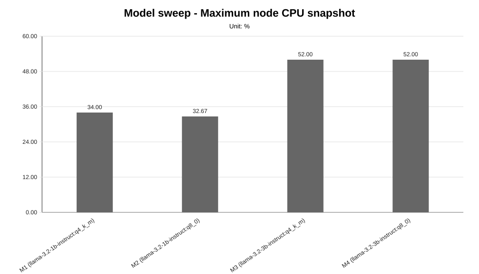
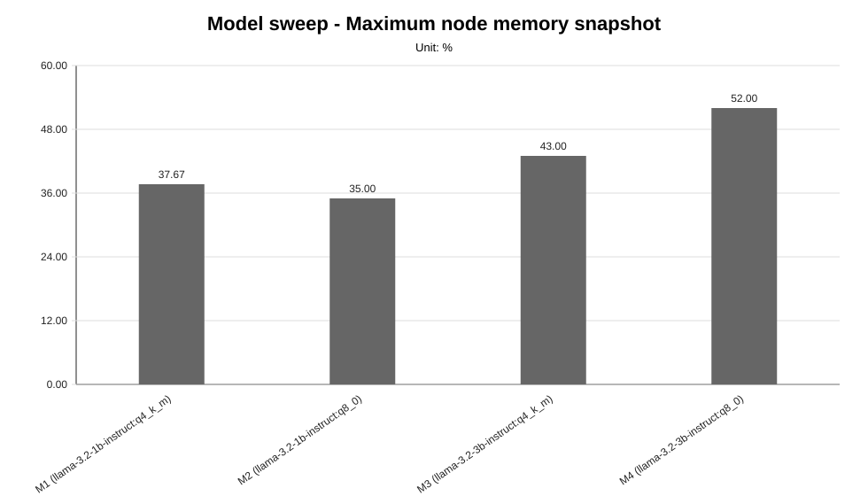
not_executed sweep means that neither measurement CSV files nor unsupported-scenario evidence were found for any configured scenario in that family.Execution status: fully_measured
Execution note: All configured scenarios in this sweep have measured benchmark samples.
Varied dimension: Kubernetes placement strategy for LocalAI server and workers
Fixed dimensions: baseline model, baseline worker count, baseline workload, baseline protocol.
Reference scenario within the sweep: PL1
| Scenario count | Measured | Unsupported | Missing |
|---|---|---|---|
| 2 | 2 | 0 | 0 |
| Fixed dimension | Value inherited from baseline |
|---|---|
| Model | llama-3.2-1b-instruct:q4_k_m |
| Worker count | 2 |
| Workload | users=2, spawnRate=1, runTime=2m |
| Prompt | Reply with only READY. |
| Temperature | 0.1 |
| Request timeout | 120 s |
| Scenario | Status | Varied value (Kubernetes placement strategy for LocalAI server and workers) | Model | Workers | Placement | Workload | Timeout (s) |
|---|---|---|---|---|---|---|---|
PL1 | measured | colocated_sc_app_02 | llama-3.2-1b-instruct:q4_k_m | 2 | colocated_sc_app_02 | users=2, spawnRate=1, runTime=2m | 120 |
PL2 | measured | distributed | llama-3.2-1b-instruct:q4_k_m | 2 | distributed | users=2, spawnRate=1, runTime=2m | 120 |
This compact table reports the core indicators used to read the sweep at a glance. Detailed percentiles, deltas and resource snapshots are reported in the following extended table.
| Scenario | Description | Status | Sample count | Mean response time (ms) | P95 response time (ms) | Throughput (requests/s) | Unsupported evidence |
|---|---|---|---|---|---|---|---|
PL1 | PL1 (colocated_sc_app_02) | measured | 3 | 1483.75 | 1500.00 | 0.5749 | |
PL2 | PL2 (distributed) | measured | 3 | 1538.32 | 1600.00 | 0.5656 |
This secondary table keeps the additional metrics aligned with the technical diagnosis while avoiding an excessively wide primary summary table.
| Scenario | P50 response time (ms) | P99 response time (ms) | Mean response time delta (%) | P95 response time delta (%) | Throughput delta (%) | Max node CPU snapshot (%) | Max node memory snapshot (%) |
|---|---|---|---|---|---|---|---|
PL1 | 1500.00 | 1633.33 | 0.00 | 0.00 | 0.00 | 35.00 | 32.67 |
PL2 | 1500.00 | 1633.33 | 3.68 | 6.67 | -1.62 | 21.00 | 33.67 |
weak_signal, confidence: low).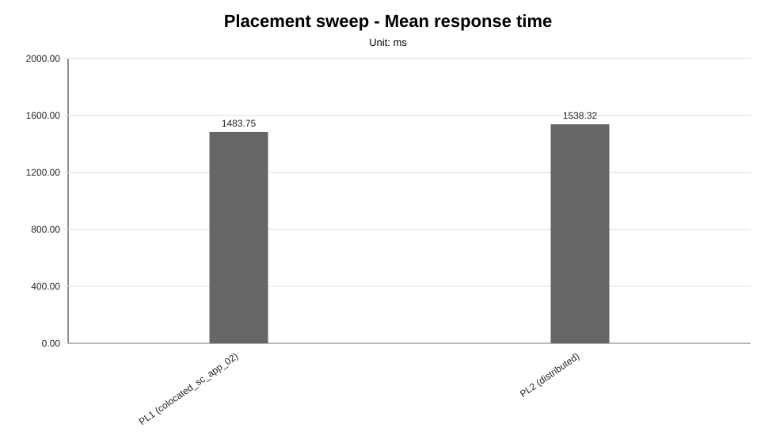
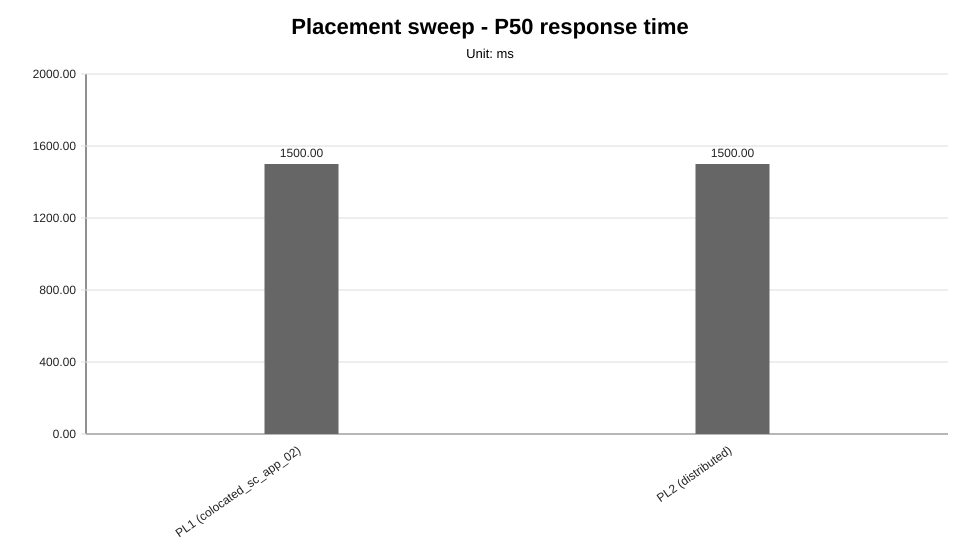
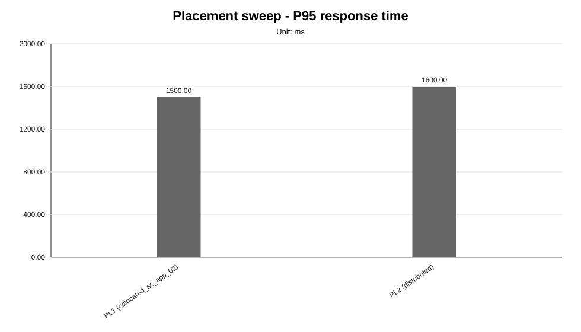
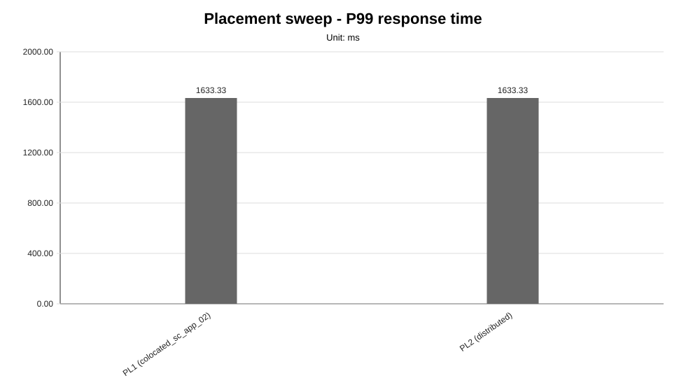
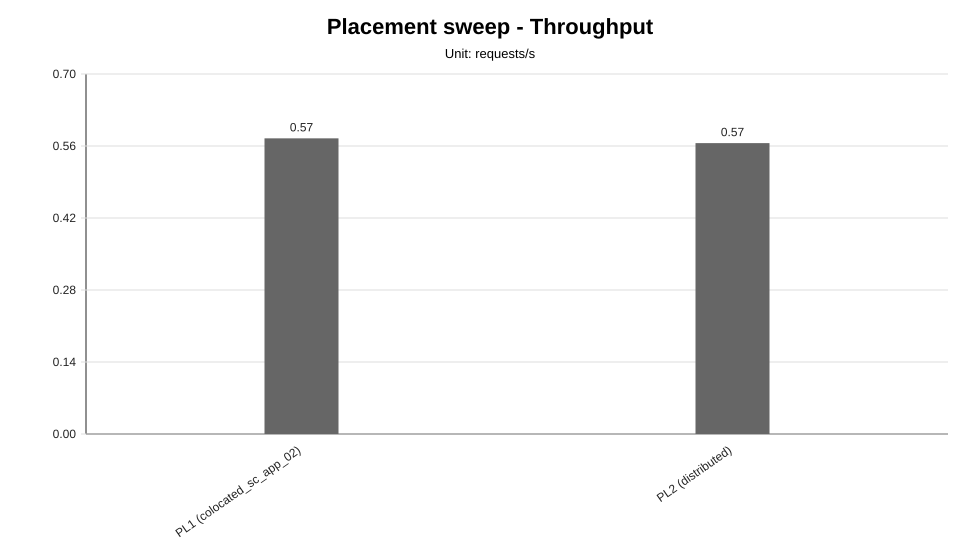
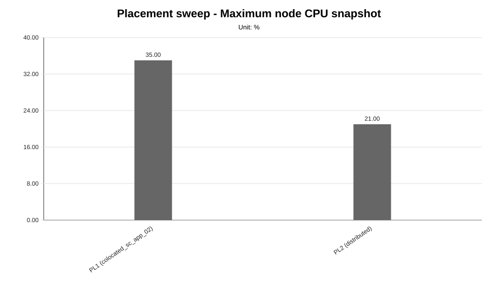
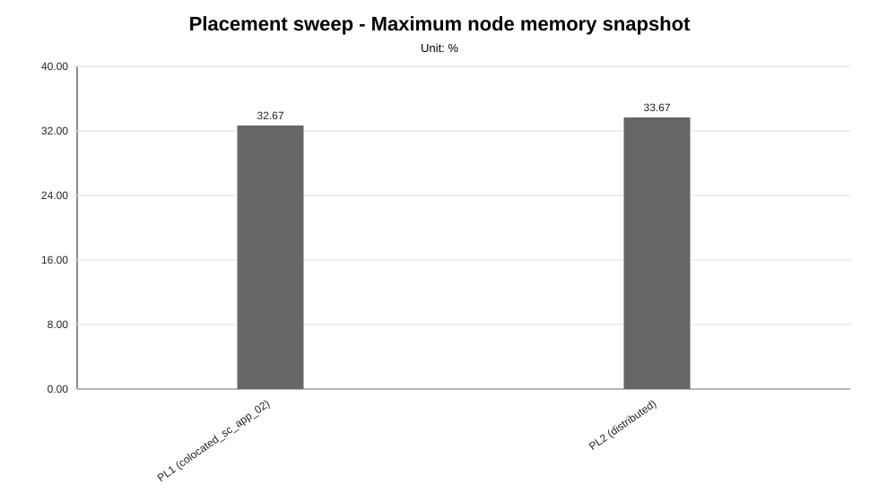
not_executed sweep means that neither measurement CSV files nor unsupported-scenario evidence were found for any configured scenario in that family.Reporting is a static post-processing artifact: rerun the reporting launcher after producing new benchmark and diagnosis outputs.
The current global report is written directly under results/reporting/ and managed artifacts are overwritten on each execution.
Optional archiving can preserve either the newly generated report package or the already generated current report under results/reporting/archive/<reporting-id>/ without changing the stable current report path.
Each benchmark family also receives a dedicated report under results/reporting/sweeps/<family>/.
Quantitative charts are generated from measurement CSV files whenever available; technical diagnosis is used as contextual and interpretative evidence.
Unsupported scenarios are reported explicitly and are not treated as measured performance regressions.